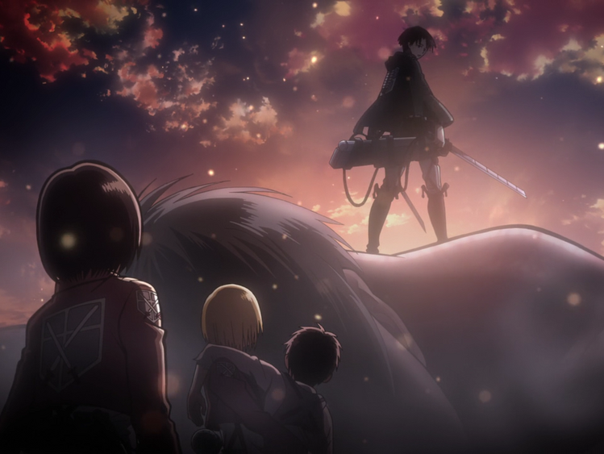
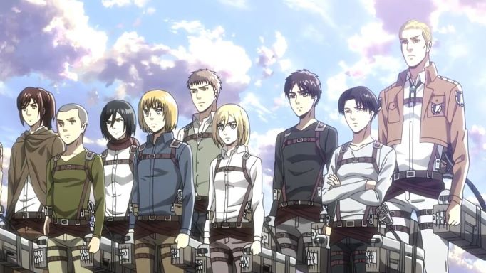

About Levi
Levi was born underground and had many hardships during his life, he was raised by kenny once his mother died. He is said to be humanity's strongest solider. At first he was a captain of his own squad and later on eren and the group were his squad. He is alson known as a clean freak.
Levi saving Eren, Armin and Mikasa from a titan
Levi's Abilities
- Levi is the best at using the 3D gear, he is said to be strong like a thousand soliders
- He is very intelligent and has has shown a profound ability to quickly analyze situations, and make calculated decisions in the heat of battle
- Although his short stature he has shown formidable physical strentgh
- He is a natural leader and takes charge and care of the soliders most of the time


Levi's spinning attack on the female titan and other titans
Levi's Friends/Comrades
Levi and his squad